Dashboard is a default page you see after you log in. It is an adjustable view that may contain many types of information blocks (widgets), such as today’s calendar, recent calls and emails, quick launchpad, etc. You can have several dashboards that serve different purposes and switch between them.
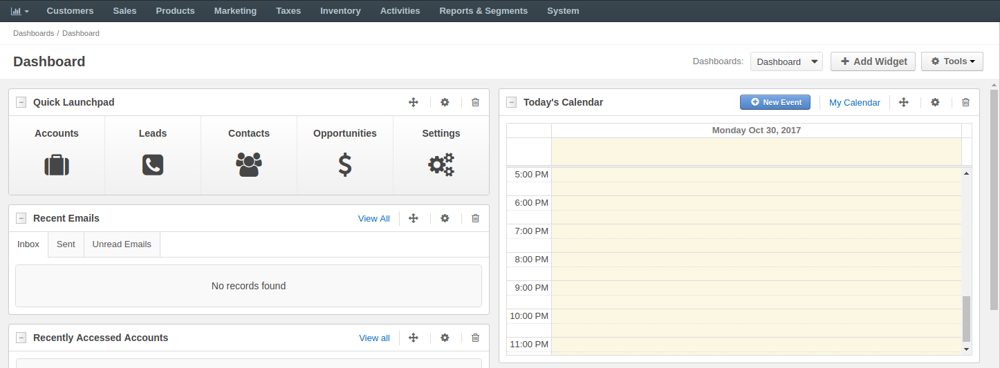In this section you will learn how to easily customize existing dashboard or create a new one, as well as add and manage widgets in the Oro application.
To create a dashboard:
Hover over the in the main menu and click Manage Dashboards.
Click Create Dashboard on the top right of the page.
The following page appears:
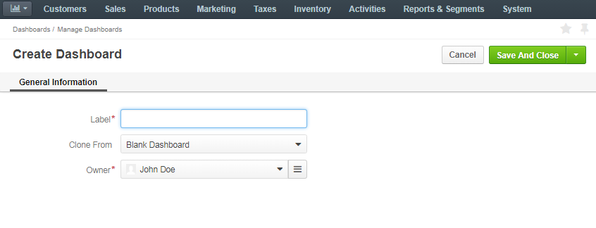The following fields are mandatory and must be specified:
| Field | Description |
|---|---|
| Label | Name used to refer to the dashboard in the system. |
| Clone from | Choose an existing dashboard to be used as a base for a new one. If you want to create a dashboard from the scratch, choose the Blank Dashboard option. |
| Owner | Limits the list of users who can manage the dashboard to the users, whose roles allow managing dashboards of the owner (e.g. the owner, members of the same business unit, head of the department, etc.) |
To save the dashboard, click Save and Close on the top right.
Initially, the dashboard contains all the widgets of the dashboard it has been cloned from. Dashboards cloned from the Blank Dashboard will be empty.
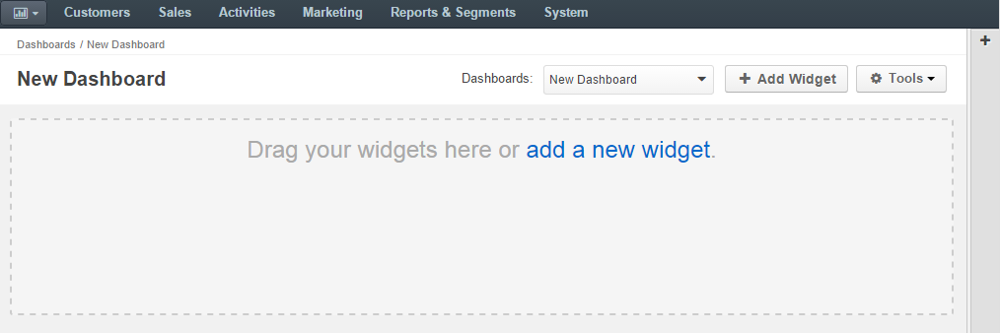You can switch to a dashboard in one of the two ways:
Hover over the in the main menu and click the dashboard name.
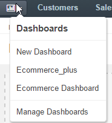Toggle dashboards in the header of the Dashboard page.
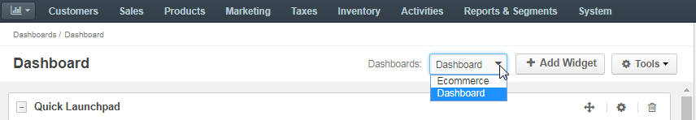Your Oro application comes with a number of out-of-the-box widgets that can simplify the day-to-day sales, marketing and communication activities. These can be broken down into three categories:
| Widgets for Sales and Marketing | Widgets for Communication | Universal Widgets |
|---|---|---|
Note
Additional widgets can be added via a third-party system integrations.
To add a widget to a dashboard:
Navigate to the dashboard (e.g. hover over the in the main menu and click the dashboard name).
Click +Add Widget.
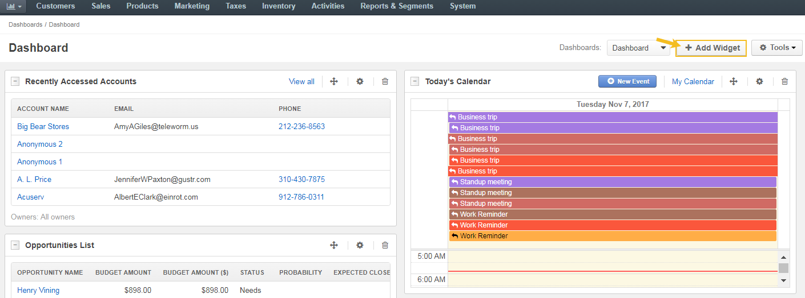The page that appears lists all the widgets available in the system which have not been added to the dashboard yet.
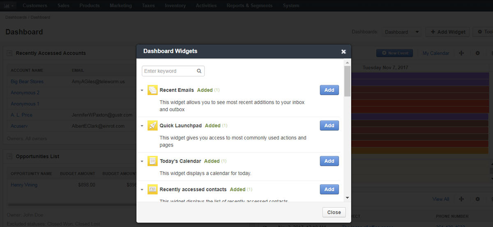To search for a widget, type its name in the search field.
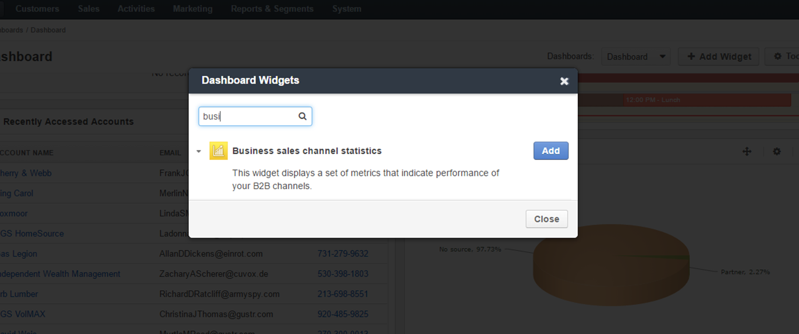Select the widget that you would like to add and click Add.
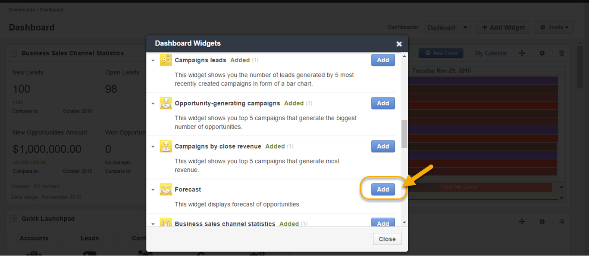This way you can add the same widgets a number of times and assign them different owners.
Note
You can add the same widgets a number of times and assign them different owners.
Widgets can be easily managed and filtered. A number of widgets can be created for various team members. For instance, a sales manager can create the same widgets for each sales rep within the organization to be able to see results of each sales rep’s work.
Manage widgets using the tools in their header:
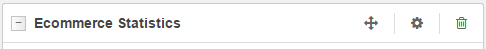The header of each widget contains:
The specified owner, date range and the territory (if available for the entity) are displayed at the bottom of the widget:
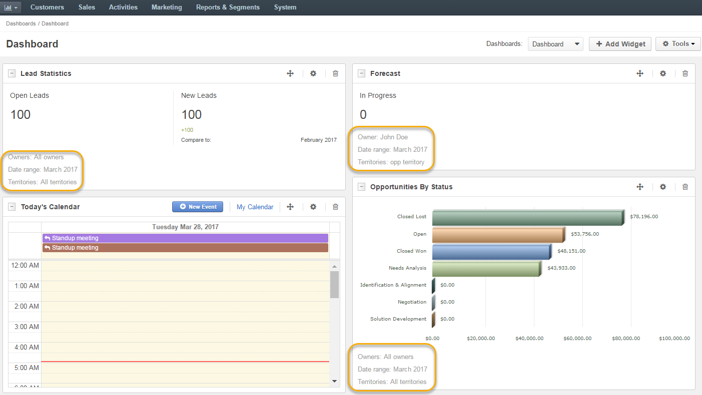By clicking in the widget header, you can adjust the following settings:
Manage the widgets via the Tools menu. Hover over the Tools and use one of the following actions:
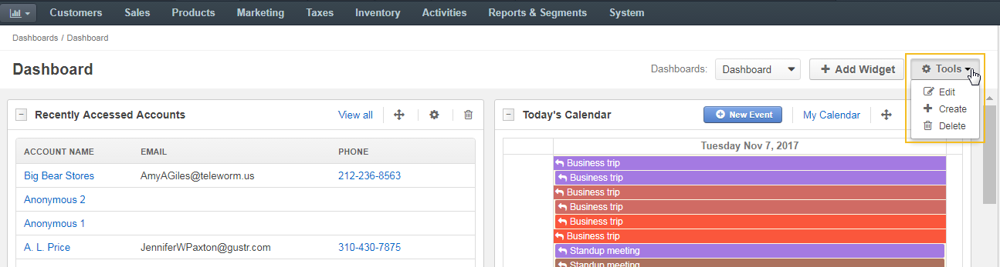Hint
You can also perform these actions via the More Options menu from the Dashboards list page (Dashboards > Manage Dashboards in the main menu).
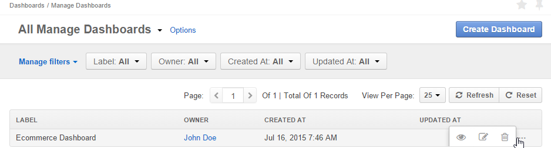